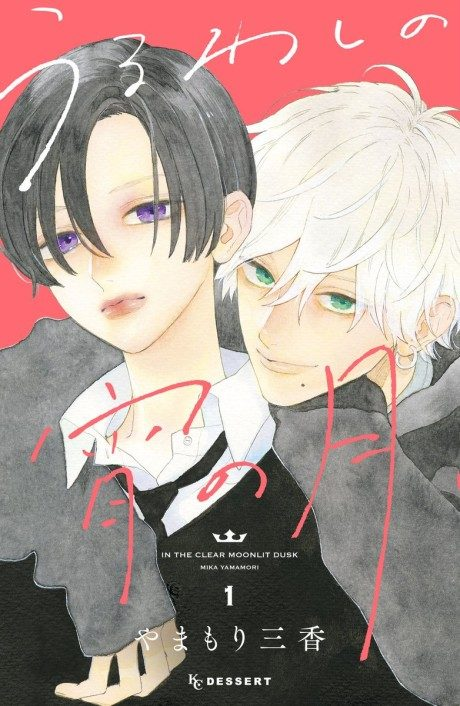

Anime

Manga2026 · Romance, Slice of Life
In the Clear Moonlit Dusk
うるわしの宵の月
AniList7.4
Animeter—
Episodes12 ep
MangaUnclear
Anime finished. Where does the manga pick up?
StatusNo source yet
We looked for where the anime ends in the manga but found no source we trust yet. The manga is 12 volumes, still running.